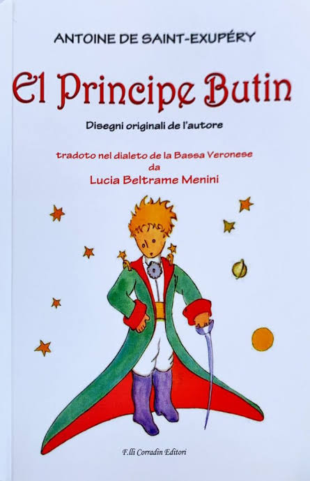
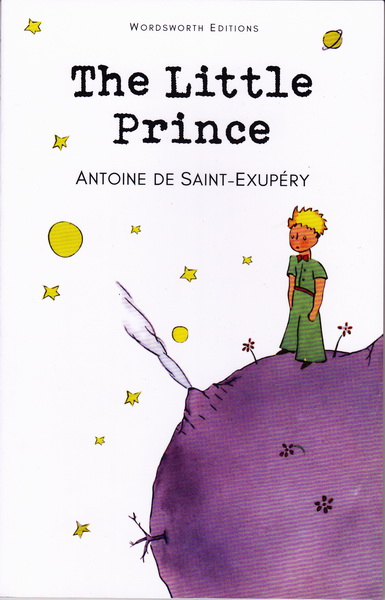
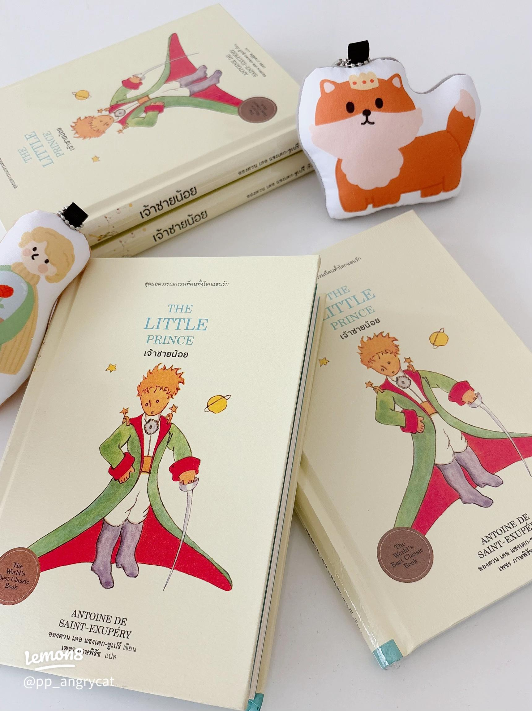

THE JOURNEY
การเดินทางของเจ้าชายน้อย
เจ้าชายน้อยออกเดินทางจากดาวเคราะห์ของเขา เพื่อค้นหาคำตอบและทำความเข้าใจโลกที่กว้างขึ้น ระหว่างการเดินทาง เขาได้พบกับผู้คนมากมาย บนดาวเคราะห์ต่าง ๆ ซึ่งแต่ละคนก็มีมุมมอง และวิธีใช้ชีวิตที่แตกต่างกัน
BOOK RECOMMENDATION
เรื่องราวเล็ก ๆ ที่ซ่อนความหมาย เกี่ยวกับความรัก มิตรภาพ และการเติบโต
อ่านเพิ่มเติม


ABOUT THE BOOK
เจ้าชายน้อยเป็นวรรณกรรมที่เล่าเรื่องราวของเด็กชาย จากดาวเคราะห์ดวงเล็ก ๆ ที่ชื่อว่า B-612 เขาใช้ชีวิตอยู่เพียงลำพัง กับดอกกุหลาบที่เขารัก ก่อนจะตัดสินใจออกเดินทางไปยัง ดาวเคราะห์ต่าง ๆ เพื่อทำความเข้าใจโลกและผู้คนที่อยู่รอบตัว
ระหว่างการเดินทาง เจ้าชายน้อยได้พบกับผู้คนหลากหลายรูปแบบ ทั้งกษัตริย์ ชายหลงตัวเอง นักธุรกิจ นักจุดโคมไฟ และนักภูมิศาสตร์ แต่ละคนมีมุมมองและวิธีคิดเกี่ยวกับชีวิตที่แตกต่างกัน การพบเจอเหล่านี้ทำให้เขาเริ่มตั้งคำถามว่า สิ่งใดกันแน่ที่มีความสำคัญในชีวิต และทำไมผู้ใหญ่จึงมักมองโลกแตกต่างจากเด็ก
เมื่อเดินทางมาถึงโลก เขาได้พบกับนักบินคนหนึ่งกลางทะเลทราย และยังได้พบกับสุนัขจิ้งจอกซึ่งสอนให้เขาเข้าใจถึงความหมาย ของมิตรภาพ ความผูกพัน และความรับผิดชอบต่อสิ่งที่เรารัก เรื่องราวของเจ้าชายน้อยจึงไม่ได้เป็นเพียงนิทานสำหรับเด็ก แต่เป็นเรื่องราวที่ชวนให้ผู้อ่านทุกวัยกลับมามองความสัมพันธ์ และสิ่งสำคัญในชีวิตของตัวเองอีกครั้ง
THE AUTHOR
นักเขียนและนักบินชาวฝรั่งเศส ผู้สร้างสรรค์เรื่องราวของเจ้าชายน้อย ผลงานของเขาได้รับการยอมรับจากผู้อ่านทั่วโลก และกลายเป็นหนึ่งในวรรณกรรมที่มีความหมายต่อผู้คนหลายรุ่น

THE JOURNEY
เจ้าชายน้อยออกเดินทางจากดาวเคราะห์ของเขา เพื่อค้นหาคำตอบและทำความเข้าใจโลกที่กว้างขึ้น ระหว่างการเดินทาง เขาได้พบกับผู้คนมากมาย บนดาวเคราะห์ต่าง ๆ ซึ่งแต่ละคนก็มีมุมมอง และวิธีใช้ชีวิตที่แตกต่างกัน
LOVE
ดอกกุหลาบคือสิ่งสำคัญที่ทำให้เจ้าชายน้อย เรียนรู้เกี่ยวกับความรักและความผูกพัน แม้จะมีดอกกุหลาบมากมายอยู่บนโลก แต่สำหรับเขา ดอกกุหลาบของเขากลับเป็นสิ่งที่พิเศษที่สุด เพราะเป็นความสัมพันธ์ที่เกิดจากการดูแลและใช้เวลาร่วมกัน
FRIENDSHIP
การพบกับสุนัขจิ้งจอกทำให้เจ้าชายน้อยเข้าใจว่า ความสัมพันธ์เกิดขึ้นจากการใช้เวลาและการสร้างความผูกพัน การทำความรู้จักและใส่ใจใครสักคนทำให้เขากลายเป็น คนพิเศษสำหรับเรา และทำให้เราเรียนรู้ถึงความหมาย ของมิตรภาพและความรับผิดชอบต่อสิ่งที่เราผูกพัน
WORDS TO REMEMBER

WHY SHOULD YOU READ IT?
เจ้าชายน้อยไม่ใช่เพียงเรื่องราวของเด็กชาย ที่เดินทางไปยังดวงดาวต่าง ๆ แต่ยังเป็นเรื่องราวที่ชวนให้เรากลับมาทบทวน ความรัก มิตรภาพ และความหมายของการเติบโต
บางครั้งหนังสือเล่มนี้อาจทำให้เราเข้าใจว่า สิ่งที่มีคุณค่าที่สุดในชีวิต อาจเป็นสิ่งที่เราเคยมองข้ามไป
FREQUENTLY ASKED QUESTIONS